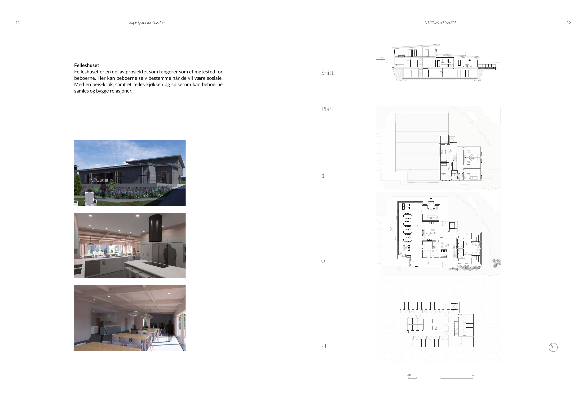
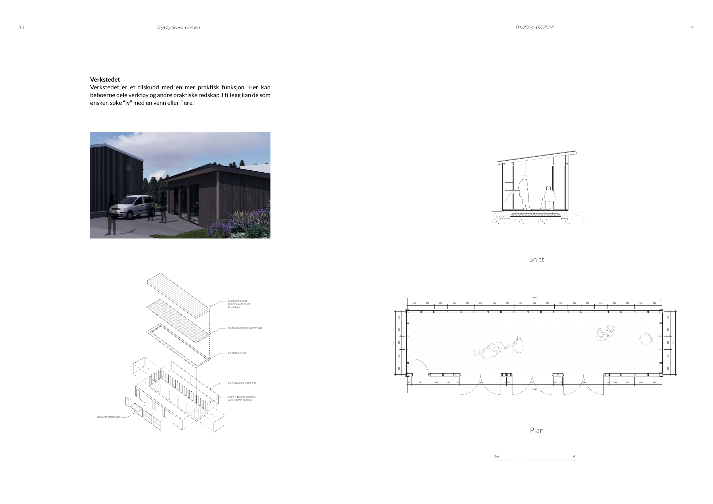
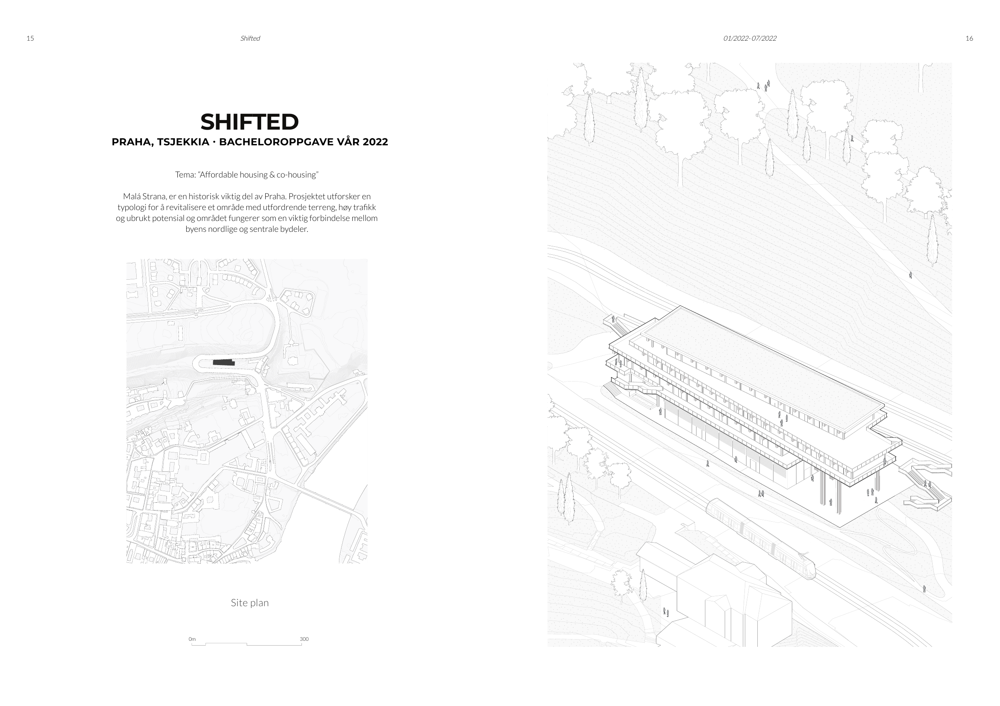
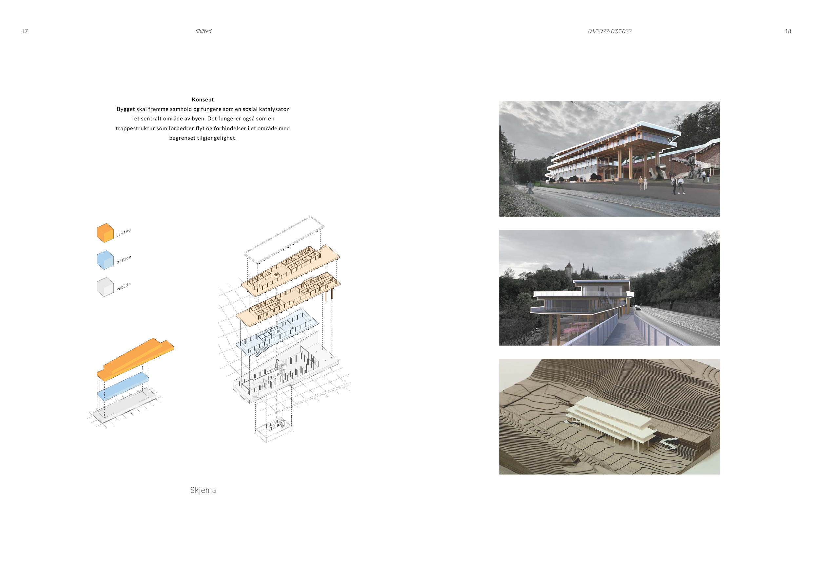
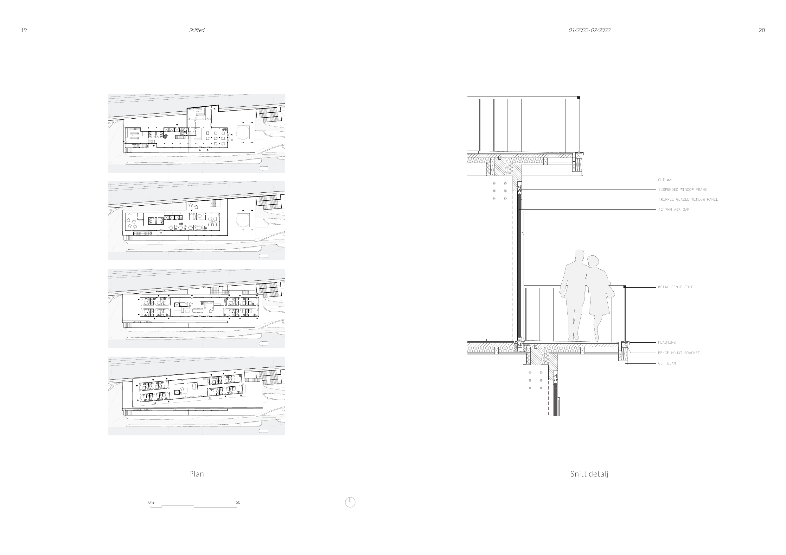
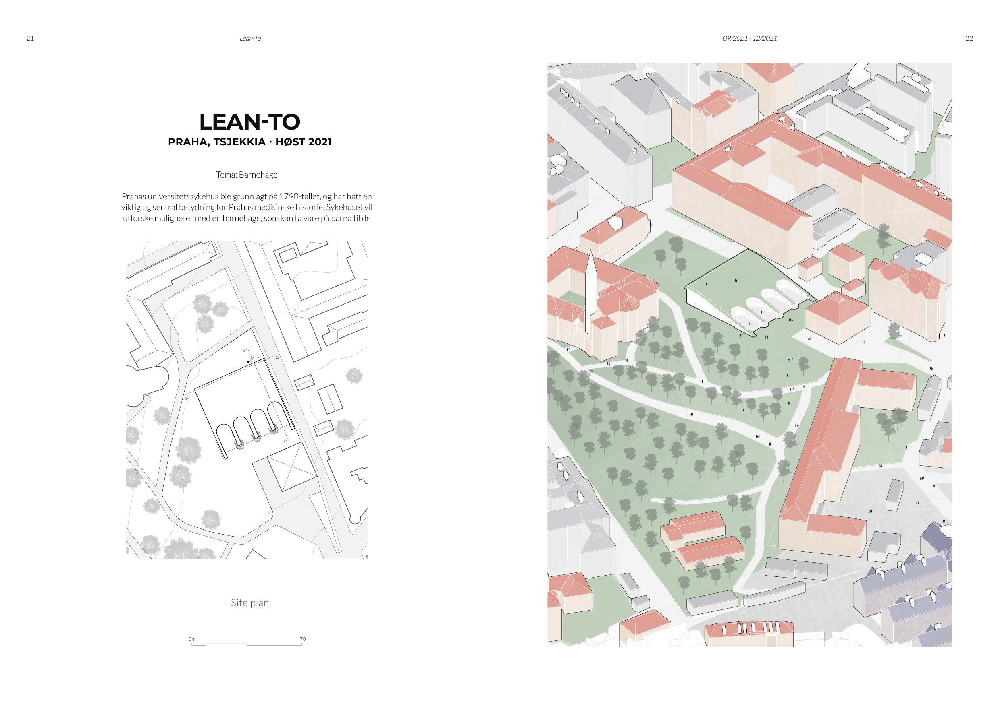
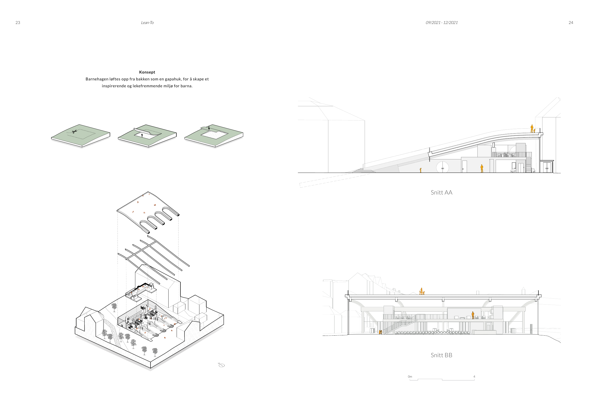

The thesis investigates how architecture can challenge today's housing standards, promote community, and prevent isolation among the elderly. Based on a site in central Sagvåg, the project consists of five private residential units and one communal building for social activities — prioritising economic sustainability and age-friendly design.






